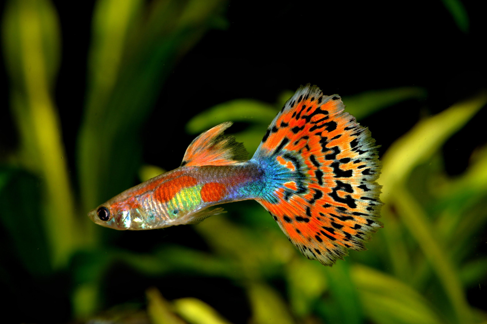

Descripción de su hábitat y estilo de vida:
El área donde hacen vida natural los peces guppy se encuentra en el noreste de Sudamérica. Estos son nativos de Antigua y Barbuda, Barbados, Brasil, Guyana, Jamaica, las Antillas Holandesas, Trinidad y Tobago, las Islas Vírgenes de los Estados Unidos y Venezuela. Sin embargo, los guppys han sido introducidos en muchos países en diferentes continentes, excepto en la Antártida. Son omnívoros, se alimentan de comida congelada, comida en copos o escamas y comida liofilizada. Entre los alimentos vivos o liofilizados más populares y adecuados para los guppies se encuentran el camarón salado, la dafnia y las larvas de mosquitos.
Características: